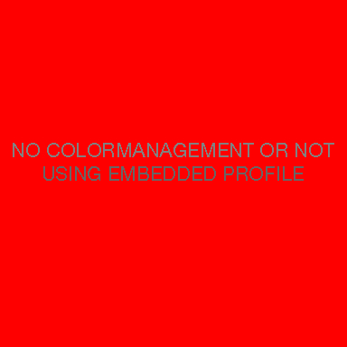
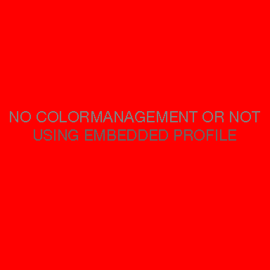
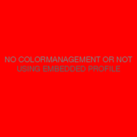

ICC Color Management & Rendering Intent Test
Revision history:
2018-04-08 v1.1.1 Added licensing information (CC-BY-SA)
2018-04-07 v1.1 Added display test profiles, and RGB elements to images.
2018-04-06 v1.0
Test images
The test images are designed to test the color management capabilities (or lack thereof) of web browsers and graphics applications. Each image has an embedded ICCv2 profile that defines how the image should look. You may also download this test for off-line use.
Test profiles
You will also want to make sure that an application is actually using the display profile and not a generic profile like sRGB. For that purpose, several test profiles are available which, when installed and assigned to a display device, will introduce a strong color cast to the whole display—except in correctly color managed applications that use the display profile, which will cancel out the color cast. So, if after installing and assigning one of the test profiles, you see a strong color cast on gray elements in the pictures below, the display profile isn't being used.
Each profile comes in two variants: Matrix based and color lookup table + matrix based, so you can also use them to test for correct support of lookup table display profiles (if color lookup table profiles are not supported, the test profiles will swap the red, green and blue channels to blue, red and green).
Test No. 1: Color Management with matrix based profiles
The following images show whether or not color management and/or embedded matrix profiles are used (note that this test can not distinguish between color management not being used, or the embedded matrix profile not being used).
JPEG image with embedded matrix profile

PNG image with embedded matrix profile

Expected Results
If you see this result above, then the application seemingly supports embedded matrix profiles for the respective image file type.

If you see this result above, then the application seemingly does not support color management or embedded matrix profiles for the respective image file type.
Test No. 2: Color Management with lookup table based profiles
The following images show whether or not color management and/or embedded color lookup table profiles are used (note that this test can not distinguish between color management not being used, or the embedded profile not being used), and if so, which rendering intent is being utilized. It also allows, to a limited extent, a quality assessment of the color transform.
Things to look out for:
On the left and right hand side of each image are three filled circles. Each circle has a lightness difference of L*=1 (in the sRGB color space) from the previous circle (or the background in case of the topmost circle on each side). All circles should ideally be visible on an accurately calibrated and profiled display, although it's ok if the topmost and middle circles are hard to see (they will be easier to see in a dark room).
The grayscale gradients next to the circles should not show color casts.
JPEG image with embedded color lookup table profile (has fallback matrix tags)

PNG image with embedded color lookup table profile (has fallback matrix tags)

JPEG image with embedded color lookup table profile (no fallback matrix tags)
.jpg?v=1.1)
PNG image with embedded color lookup table profile (no fallback matrix tags)
.png?v=1.1)
Expected Results

If you see this result above, then the application seemingly supports embedded color lookup table profiles for the respective image file type. Note that if the application lets you choose a rendering intent or does not default to perceptual, you may see the word "colorimetric" or "saturation" instead.

If you see this result above, then the application seemingly supports only matrix profiles for the respective image file type.

If you see this result above, then the application seemingly does not support color management or embedded color lookup table profiles for the respective image file type.
If you see an altogether different result, it probably means the application's color management implementation is flawed or has bugs.
© Florian Höch | displaycal.net | Licensed under the Creative Commons BY-SA 4.0 International License